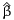
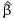

PythonBiogeme: a short introduction
Michel Bierlaire
July 6, 2016
Report TRANSP-OR 160706
Transport and Mobility Laboratory
School of Architecture, Civil and Environmental Engineering
Ecole Polytechnique Fédérale de Lausanne
transp-or.epfl.ch
The package Biogeme (biogeme.epfl.ch) is designed to estimate the parameters
of various models using maximum likelihood estimation. It is particularly designed
for discrete choice models. In this document, we present step by step how to
specify a simple model, estimate its parameters and interpret the output of the
software package. We assume that the reader is already familiar with discrete
choice models, and has successfully installed PythonBiogeme. This document has
been written using PythonBiogeme 2.5, but should remain valid for future
versions.
1 The data file
Biogeme assumes that the data file contains in its first line a list of labels
corresponding to the available data, and that each subsequent line contains the
exact same number of numerical data, each row corresponding to an observation.
Delimiters can be tabs or spaces. The tool biopreparedata can be used to
transform a file in Comma Separated Version (CSV) into the required format.
The tool biocheckdata verifies if the data file complies with the required
format.
The data file used for this example is swissmetro.dat. Note that the first
time a data file is used by Biogeme, it is compressed and saved in binary format in
a file. The name of this file is the same as the original file, preceeded by __bin_. In
our example, the binary file is __bin_optima.dat. If the original text file is modifed,
the binary file must be erased from the directory in order to account for the
changes. The name of the file that has actually been used is reported in the
output file.
Biogeme is available in two versions. BisonBiogeme is designed to estimate
the parameters of a list of predetermined discrete choice models such as
logit, binary probit, nested logit, cross-nested logit, multivariate extreme
value models, discrete and continuous mixtures of multivariate extreme
value models, models with nonlinear utility functions, models designed for
panel data, and heteroscedastic models. It is based on a formal and simple
language for model specification. PythonBiogeme is designed for general
purpose parametric models. The specification of the model and of the
likelihood function is based on an extension of the python programming
language. A series of discrete choice models are precoded for an easy
use.
In this document, we describe the model specification for PythonBiogeme.
2 The model
The model is a logit model with 3 alternatives: train, Swissmetro and car. The
utility functions are defined as:
V_1 = V_TRAIN = ASC_TRAIN + B_TIME * TRAIN_TT_SCALED + B_COST * TRAIN_COST_SCALED V_2 = V_SM = ASC_SM + B_TIME * SM_TT_SCALED + B_COST * SM_COST_SCALED V_3 = V_CAR = ASC_CAR + B_TIME * CAR_TT_SCALED + B_COST * CAR_CO_SCALED
where TRAIN_TT_SCALED, TRAIN_COST_SCALED, SM_TT_SCALED, SM_COST_SCALED,
CAR_TT_SCALED, CAR_CO_SCALED are variables, and ASC_TRAIN, ASC_SM, ASC_CAR, B_TIME,
B_COST are parameters to be estimated. Note that it is not possible to identify all
alternative specific constants ASC_TRAIN, ASC_SM, ASC_CAR from data. Consequently,
ASC_SM is normalized to 0.
The availability of an alternative i is determined by the variable yi,
i=1,...3, which is equal to 1 if the alternative is available, 0 otherwise. The
probability of choosing an available alternative i is given by the logit
model:
Given a data set of N observations, the log likelihood of the sample is
where in is the alternative actually chosen by individual n.
3 Model specification: PythonBiogeme
The model specification file must have an extension .py. The file 01logit.py is
reported in Section A.1. We describe here its content.
THe objective is to provide to PythonBiogeme the formula of the log
likelihood function to maximize, using a syntax based on the Python
programming language, and extended for the specific needs of Biogeme. The file
can contain comments, designed to document the specification. Comments are
included using the characters #, consistently with the Python syntax. All
characters after this command, up to the end of the current line, are ignored by
PythonBiogeme. In our example, the file starts with comments describing the
name of the file, its author and the date when it was created. A short description
of its content is also provided.
######################################## # # @file 01logit.py # @author: Michel Bierlaire, EPFL # @date: Wed Dec 21 13:23:27 2011 # # Logit model # Three alternatives: Train, Car and Swissmetro # SP data # #######################################
These comments are completely ignored by PythonBiogeme. However, it is
recommended to use many comments to describe the model specification, for
future reference, or to help other persons to understand the specification.
The specification file must start by loading the Python libraries needed
by PythonBiogeme. Two libraries are mandatory biogeme and headers.
The first includes the extension of the PYthon programming language
needed by PythonBiogeme. The second imports the names of the headers
of the data file, so that they can be directly used in the specification
of the model. In this example, an additional library is loaded as well:
statistics. It implements some functions that report statistics about the data
file.
from biogeme import * from headers import * from statistics import *
The next statements use the function Beta to define the parameters to
be estimated. For each parameter, the following information must be
mentioned:
- the name of the parameter,
- the default value,
- a lower bound,
- an upper bound,
- a flag that indicates if the parameter must be estimated (0) or if it
keeps its default value (1),
- a description of the parameter, to be used in the LATEX report.
Note that, in Python, case sensitivity is enforced, so that varname and
Varname would represent two different variables. In our example, the default value
of each parameter is 0. If a previous estimation had been performed before,
we could have used the previous estimates as default value. Note that,
for the parameters that are estimated by PythonBiogeme, the default
value is used as the starting value for the optimization algorithm. For the
parameters that are not estimated, the default value is used throughout the
estimation process. In our example, the parameter ASC_SM is not estimated (as
specified by the 1 in the fifth argument on the corresponding line), and its
value is fixed to 0. A lower bound and an upper bound must be specified.
By default, we suggest to use -1000 and 1000. If the estimated value of
the parameter happens to equal to one of these bounds, it is a sign that
the bounds are too tight and larger values should be provided. However,
most of the time, if a coefficient reaches the value 1000 or -1000, it means
that its variable is poorly scaled, and that its units should be changed.
ASC_CAR = Beta(’ASC_CAR’,0,-1000,1000,0,’Car cte.’) ASC_TRAIN = Beta(’ASC_TRAIN’,0,-1000,1000,0,’Train cte.’) ASC_SM = Beta(’ASC_SM’,0,-1000,1000,1,’Swissmetro cte.’) B_TIME = Beta(’B_TIME’,0,-1000,1000,0,’Travel time’) B_COST = Beta(’B_COST’,0,-1000,1000,0,’Travel cost’)
Note that none of the Python variables is used by PythonBiogeme. They are
used only to simplify the writing of the formula. Therefore, nothing prevents to
write
car_cte = Beta(’ASC_CAR’,0,-1000,1000,0,’Car cte.’)
and to use car_cte later in the specification. The variable car_cte will be
unknown by PythonBiogeme and will not appear in any reporting file. We
strongly advise against this practice, and suggest to use the exact same name for
the Python variable on the left hand side, and for the PythonBiogeme
variable, appearing as the first argument of the function, as illustrated in this
example.
It is possible to define new variables in addition to the variables defined in the
data files. It can be done either by defining Python variables using the Python
syntax:
SM_COST = SM_CO * ( GA == 0 ) TRAIN_COST = TRAIN_CO * ( GA == 0 )
It can also be done by defining PythonBiogeme variables, using the function
DefineVariable.
CAR_AV_SP = DefineVariable(’CAR_AV_SP’,CAR_AV * ( SP != 0 )) TRAIN_AV_SP = DefineVariable(’TRAIN_AV_SP’,TRAIN_AV * ( SP != 0 ))
The latter definition is equivalent to add a column with the specified header to
the data file. It means that the value of the new variables for each observation is
calculated once before the estimation starts. On the contrary, with the method
based on Python variable, the calculation will be applied again and again, each
time it is needed by the algorithm. For small models, it may not make any
difference, and the first method may be more readable. But for models requiring
a significant amount of time to be estimated, the time savings may be
substantial.
When boolean expressions are involved, the value TRUE is represented by 1,
and the value FALSE is represented by 0. Therefore, a multiplication involving a
boolean expression is equivalent to a “AND” operator. The above code is
interpreted in the following way:
- CAR_AV_SP is equal to CAR_AV if SP is different from 0, and is equal to 0
otherwise. TRAIN_AV_SP is defined similarly.
- SM_COST is equal to SM_CO if GA is equal to 0, that is, if the traveler
does not have a yearly pass (called “general abonment”). If the traveler
possesses a yearly pass, then GA is different from 0, and the variable
SM_COST is zero. The variable TRAIN_COST is defined in the same way.
Variables can be also be rescaled. For numerical reasons, it is good practice to
scale the data so that the values of the estimated parameters are around 1.0. A
previous estimation with the unscaled data has generated parameters around
-0.01 for both cost and time. Therefore, time and cost are divided by
100.
TRAIN_TT_SCALED = DefineVariable(’TRAIN_TT_SCALED’,\ TRAIN_TT / 100.0) TRAIN_COST_SCALED = DefineVariable(’TRAIN_COST_SCALED’,\ TRAIN_COST / 100) SM_TT_SCALED = DefineVariable(’SM_TT_SCALED’, SM_TT / 100.0) SM_COST_SCALED = DefineVariable(’SM_COST_SCALED’, SM_COST / 100) CAR_TT_SCALED = DefineVariable(’CAR_TT_SCALED’, CAR_TT / 100) CAR_CO_SCALED = DefineVariable(’CAR_CO_SCALED’, CAR_CO / 100)
We now write the specification of the utility functions.
V1 = ASC_TRAIN + \ B_TIME * TRAIN_TT_SCALED + \ B_COST * TRAIN_COST_SCALED V2 = ASC_SM + \ B_TIME * SM_TT_SCALED + \ B_COST * SM_COST_SCALED V3 = ASC_CAR + \ B_TIME * CAR_TT_SCALED + \ B_COST * CAR_CO_SCALED
We need to associate each utility function with the number of the
alternative, using the numering convention in the data file. In this example, the
convention is described in Table 1. To do this, we use a Python dictionary:
V = {1: V1, 2: V2, 3: V3}
We use also a dictionary to describe the availability conditions of each
alternative:
av = {1: TRAIN_AV_SP, 2: SM_AV, 3: CAR_AV_SP}
| Train | 1 |
| Swissmetro | 2 |
| Car | 3 |
Table 1: Numbering of the alternatives
We now define the choice model. The function bioLogLogit provides
the logarithm of the choice probability of the logit model. It takes three
arguments:
- the dictionary describing the utility functions,
- the dictionary describing the availability conditions,
- the alternative for which the probability must be calculated.
In this example, we obtain
logprob = bioLogLogit(V,av,CHOICE)
We next defined an iterator on the data using the statement
and define the ESTIMATE variable of the BIOGEME_OBJECT with the formula of the
log likelihood function:
BIOGEME_OBJECT.ESTIMATE = Sum(logprob,’obsIter’)
Other variables can be defined in the BIOGEME_OBJECT. In particular, the EXCLUDE
variable allows to ignore some observations in the data file. It contains a boolean
expression that is evaluated for each observation in the data file. Each observation
such that this expression is “true” is discarded from the sample. In our example,
the modeler has developed the model only for work trips, so that every
observation such that the trip purpose is not 1 or 3 is removed. Observations such
that the dependent variable CHOICE is 0 are also removed. Remember the
convention that “false” is represented by 0, and “true” by 1, so that the ‘*’
can be interpreted as a “and”, and the ‘+’ as a “or”. Note also that the
result of the ‘+’ can be 2, so that we test is the result is equal to 0 or not.
The exclude condition in our example is therefore interpreted as: either
(PURPOSE different from 1 and PURPOSE different from 3), or CHOICE equal to
0.
exclude = (( PURPOSE != 1 ) * ( PURPOSE != 3 ) + \ ( CHOICE == 0 )) > 0 BIOGEME_OBJECT.EXCLUDE = exclude
Note that we have conveniently used an intermediary Python variable exclude
in this example. It is not necessary. The above statement is completely equivalent
to
BIOGEME_OBJECT.EXCLUDE = \ (( PURPOSE != 1 ) * ( PURPOSE != 3 ) + \ ( CHOICE == 0 )) > 0
The variable PARAMETERS allows to define various parameters controlling the
configuration of PythonBiogeme. In this example, we have selected to use the
optimization algorithm BIO using the following syntax.
BIOGEME_OBJECT.PARAMETERS[’optimizationAlgorithm’] = "BIO"
The variable FORMULAS is used to select the parts of the model specification
that are reported in the report file. In general, the formula of the log
likelihood function is too complicated to be readable, and it is preferred to
report only the specification of the utility functions, as in this example.
BIOGEME_OBJECT.FORMULAS[’Train utility’] = V1 BIOGEME_OBJECT.FORMULAS[’Swissmetro utility’] = V2 BIOGEME_OBJECT.FORMULAS[’Car utility’] = V3
Finally, we request PythonBiogeme to calculate some statistics about the null
log likelihood, the log likelihood of a model with constants only, and statistics
about the availability of the alternatives.
nullLoglikelihood(av,’obsIter’) choiceSet = [1,2,3] cteLoglikelihood(choiceSet,CHOICE,’obsIter’) availabilityStatistics(av,’obsIter’)
The function nullLoglikelihood computes the null loglikelihood from the
sample and ask PythonBiogeme to include it in the output file. The first
argument is a dictionary mapping each alternative ID with its availability
condition. The second is an iterator on the data file. The result is the
log likelihood of a model where the choice probability for observation
n is given by is 1∕Jn, where Jn is the number of available alternatives,
i.e.
The function cteLoglikelihood computes the constant loglikelihood from the
sample and ask PythonBiogeme to include it in the output file. It assumes that
the full choice set is available for each observation. The first argument is a list
containing the alternatives in the choice set. The second argument is the
choice expression producing the id of the chosen alternative. The third
argument is an iterator on the data file. The result is the log likelihood
of a logit model where the only parameters are the alternative specific
constants. If ni is the number of times alternative i is chosen, then it is given
by
where n = ∑
ini is the total number of observations.
The function availabilityStatistics computes the number of times each
alternative is declared available in the data set and ask PythonBiogeme to
include it in the output file. The first argument is a dictionary containing for each
alternative the expression for its availability. The second is an iterator on the data
file. The result is a dictionary D with an entry D[i] for each alternative i
containing the number of times it is available.
4 Running PythonBiogeme
The estimation of the model is performed using the following command
pythonbiogeme 01logit swissmetro.dat
The following information is displayed during the execution.
- Some information about the version of Biogeme.
This is biogeme (pythonbiogeme) 2.5
- The name of the sample file that is read.
Read sample file: swissmetro.dat
- PythonBiogeme is able to use several processors if they are available. By
default, it uses half of the number fo available processors on the computer.
Nbr of cores reported by the system: 4 Nbr of cores used by biogeme: 2
- The details about the iterations of the estimation procedure are reported.
Init. log-likelihood: -6964.66 [00:00] gmax Iter radius f(x) Status rhok nFree +1.44e-01 1 1.00e+00 +6.9646630e+03 ****Converg +1.07e+00 4 ++ P +5.29e-02 2 2.00e+00 +5.4217993e+03 ****Converg +1.08e+00 4 ++ P +9.43e-03 3 4.00e+00 +5.3328087e+03 ****Converg +1.02e+00 4 ++ P +2.34e-04 4 8.00e+00 +5.3312529e+03 ****Converg +1.00e+00 4 ++ P Convergence reached... --> time interval [16:28:46,16:28:46]
- The value of the parameters at the end of the iterarions.
Estimated parameters: ASC_CAR = -0.154633 B_TIME = -1.27786 B_COST = -1.08379 ASC_SM = 0 ASC_TRAIN = -0.701187
The following files are generated by PythonBiogeme:
- 01logit.html: the results of the estimation in Html format. Its content
is described in Section 5.
- 01logit_param.py: the estimated value of the parameters, together with
the variance-covariance matrix of the estimates, in a syntax that can
be directly reused in a model specification file.
- 01logit.log: a file containing messages produced by
PythonBiogeme during the run.
- 01logit.tex: a file containing the main results in LATEX format. See
Table 2.
- hess.lis: contains the final BHHH and the second derivative, or
Hessian, matrix. The format is such that it can be copied and pasted
in a matrix language such as Matlab or Octave.
- hessian.lis: contains the (opposite of the) Hessian matrix of the log
likelihood function at each iteration, in a Matlab compatible format.
- __parametersUsed.py: provides an exhaustive list of the parameters used
by the run of PythonBiogeme, together with the value that has been
used.
In order to avoid erasing previously generated results, the name of the files
may vary from one run to the next. Therefore, PythonBiogeme explicitly
mentions the name of the main files that have been generated.
File 01logit_param.py created File 01logit.html has been generated File 01logit.tex has been generated
| | | | Robust | | | Parameter | | Coeff. | Asympt. |
| | number | Description | estimate | std. error | t-stat | p-value
|
|
|
|
|
|
|
|
|
|
| | 1 | Car cte. | -0. | 155 | 0. | 0582 | -2. | 66 | 0. | 01 | | 2 | Train cte. | -0. | 701 | 0. | 0826 | -8. | 49 | 0. | 00 |
| 3 | Travel cost | -1. | 08 | 0. | 0682 | -15. | 89 | 0. | 00 | | 4 | Travel time | -1. | 28 | 0. | 104 | -12. | 26 | 0. | 00 |
|
|
|
|
|
|
|
|
|
| | |
|
Summary statistics
| Number of observations = 6768 | Number of excluded observations = 3960
| Number of estimated parameters = 4
| | (β0) | = | -6964.663 |
| () | = | -5331.252 |
| -2[(β0) - ()] | = | 3266.822 |
| ρ2 | = | 0.235 |
| ρ2 | = | 0.234 |
| |
|
Table 2: Results of the estimation in LATEX
5 PythonBiogeme: the report file
The report file generated by PythonBiogeme gathers various information about
the result of the estimation. First, some information about the version of
Biogeme, and some links to relevant URLs is provided. Next, the name of the
report file and the sample file are reported.
If some formulas have been requested to be reported, it is done in the next
section. After is a list of statistics requested in the model specification file. The
estimation report follows, including
- The number of parameters that have been estimated.
- The number of observations, that is, the number of rows in the data
file that have not been excluded.
- The number of excluded observations.
- Init log likelihood is the log likelihood
 i of the sample for the model
defined with the default values of the parameters.
i of the sample for the model
defined with the default values of the parameters.
- Final log likelihood is the log likelihood * of the sample for the
estimated model.
- Likelihood ratio test for the init. model is
 | (5) |
where i is the null log likelihood of the init model as defined above, and *
is the log likelihood of the sample for the estimated model.
- Rho-square is
- Rho-square-bar is
where K is the number of estimated parameters. Note that this statistic is
meaningless in the presence of constraints, where the number of degrees of
freedom is less than the number of parameters.
- Final gradient norm is the gradient of the log likelihood function computed
for the estimated parameters. If no constraint is active at the solution, it
should be close to 0. If there are equality constraints, or if some bound
constraints or inequality constraints are active at the solution (that is,
they are verified with equality), the gradient may not be close to
zero.
- Diagnostic is the diagnostic reported by the optimization algorithm. If the
algorithm has not converged, the estimation results presented in the file
cannot be used as such.
- Iterations is the number of iterations used by the algorithm before it
stopped.
- Run time is the actual time used by the algorithm before it stopped, in
minutes and seconds (format mm:ss).
- Nbr of thread: number of threads that is of processors, used during the
estimation.
The following section reports the estimates of the parameters of the utility
function, together with some statistics. For each parameter βk, the following is
reported:
- The name of the parameter.
- The estimated value βk.
- The standard error σk of the estimate, calculated as the square root of
the kthdiagonal entry of the Rao-Cramer bound (see Appendix B).
- The t statistics, calculated as tk = βk∕σk.
- The p value, calculated as 2(1 - Φ(tk)), where Φ(⋅) is the cumulative
density function of the univariate standard normal distribution.
- A sign * is appended if the absolute value value of tk is less than 1.96,
emphasizing a potential lack of statistical significance. In this example,
no such sign appears.
- The robust standard error σkR of the estimate, calculated as the square
root of the kthdiagonal entry of the robust estimate of the variance
covariance matrix. (see Appendix B).
- The robust t statistics, calculated as tkR = βk∕σkR.
- The robust p value, calculated as 2(1 - Φ(tkR)), where Φ(⋅) is the
cumulative density function of the univariate normal distribution.
- A sign * is appended if the absolute value value of tkR is less than 1.96,
emphasizing a potential lack of statistical significance. In this example,
no such sign appears.
The last section reports, for each pair of parameters k and ℓ,
- the name of βk,
- the name of βℓ,
- the entry Σk,ℓ of the Rao-Cramer bound (see Appendix B),
- the correlation between βk and βℓ, calculated as
- the t statistics, calculated as
- a sign * is appended if the absolute value value of tk,ℓ is less than 1.96,
emphasizing that the hypothesis that the two parameters are equal
cannot be rejected at the 5% level (in this example, no such sign
appears),
- the entry Σk,ℓR of ΣR, the robust estimate of the variance covariance matrix
(see Appendix B),
- the robust correlation between βk and βℓ, calculated as
- the robust t statistics, calculated as
- a sign * is appended if the absolute value value of tk,ℓR is less than 1.96,
emphasizing that the hypothesis that the two parameters are equal cannot
be rejected at the 5% level (in this example, one such sign appears, for
parameters B_COST and B_TIME).
The final line reports the value of the smallest singular value of the second derivatives
matrix. A value close to zero is a sign of singularity, that may be due to a lack of
variation in the data or an unidentified model.
A Complete specification file
A.1 01logit.py
B Estimation of the variance-covariance matrix
Under relatively general conditions, the asymptotic variance-covariance matrix of
the maximum likelihood estimates of the vector of parameters θ ∈ℝK is given by
the Cramer-Rao bound
![{ [ 2 ]} -1
- E [∇2L (θ)]-1 = - E ∂-L-(θ) .
∂θ∂θT](pythonfirstmodel13x.png) | (12) |
The term in square brackets is the matrix of the second derivatives of
the log likelihood function with respect to the parameters evaluated at
the true parameters. Thus the entry in the kth row and the ℓth column
is
Since we do not know the actual values of the parameters at which to evaluate
the second derivatives, or the distribution of xin and xjn over which to take their
expected value, we estimate the variance-covariance matrix by evaluating
the second derivatives at the estimated parameters  and the sample
distribution of xin and xjn instead of their true distribution. Thus we
use
and the sample
distribution of xin and xjn instead of their true distribution. Thus we
use
as a consistent estimator of the matrix of second derivatives.
Denote this matrix as Â. Note that, from the second order optimality
conditions of the optimization problem, this matrix is negative semi-definite,
which is the algebraic equivalent of the local concavity of the log likelihood
function. If the maximum is unique, the matrix is negative definite, and the
function is locally strictly concave.
An estimate of the Cramer-Rao bound (12) is given by
If the matrix  is negative definite then - is invertible and the Cramer-Rao
bound is positive definite.
Another consistent estimator of the (negative of the) second derivatives matrix
can be obtained by the matrix of the cross-products of first derivatives as
follows:
where
is the gradient vector of the likelihood of observation n. This approximation is
employed by the BHHH algorithm, from the work by Berndt et al. (1974).
Therefore, an estimate of the variance-covariance matrix is given by
 | (18) |
although it is rarely used. Instead,  is used to derive a third consistent
estimator of the variance-covariance matrix of the parameters, defined
as
is used to derive a third consistent
estimator of the variance-covariance matrix of the parameters, defined
as
It is called the robust estimator, or sometimes the sandwich estimator, due to
the form of equation (19). Biogeme reports statistics based on both the
Cramer-Rao estimate (15) and the robust estimate (19).
When the true likelihood function is maximized, these estimators are
asymptotically equivalent, and the Cramer-Rao bound should be preferred
(Kauermann and Carroll, 2001). When other consistent estimators are used, the
robust estimator must be used (White, 1982). Consistent non-maximum
likelihood estimators, known as pseudo maximum likelihood estimators, are
often used when the true likelihood function is unknown or difficult to
compute. In such cases, it is often possible to obtain consistent estimators
by maximizing an objective function based on a simplified probability
distribution.
References
Berndt, E. K., Hall, B. H., Hall, R. E. and Hausman, J. A. (1974).
Estimation and inference in nonlinear structural models, Annals of
Economic and Social Measurement 3/4: 653–665.
Kauermann, G. and Carroll, R. (2001). A note on the efficiency
of sandwich covariance matrix estimation, Journal of the American
Statistical Association 96(456).
White, H. (1982). Maximum likelihood estimation of misspecified
models, Econometrica 50: 1–25.